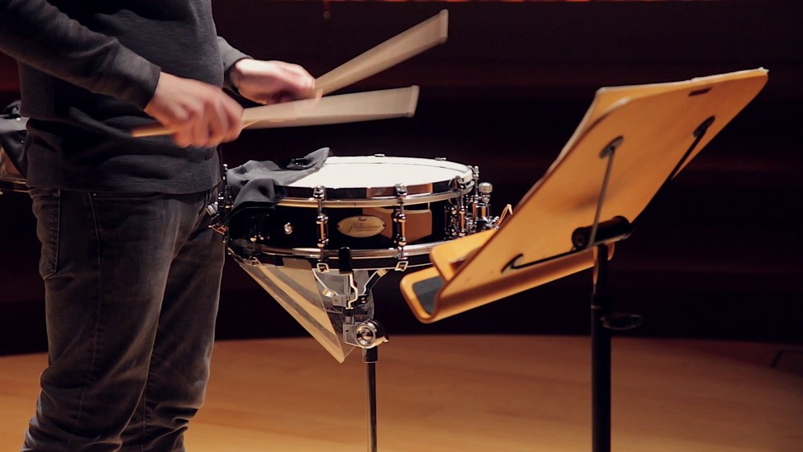

SNARE DRUM
The snare drum is an instrument in the percussion family that is considered a main part of the drum kit and is found in a variety of bands. The snare drum is usually played with a drum stick, and can be found in concert bands, marching bands, parades, drumlines, and in rock bands and modern music. It has several gut, nylon, wire, or wire-covered silk strings (snares) stretched across the lower, or snare, head; the snares vibrate sympathetically with the lower head (to which vibration is transmitted from the upper, or batter, head by air vibrations inside the drum), causing a snappy, penetrating, relatively high-pitched sound.
The modern snare drum has a cylindrical shell of wood, plywood, or metal 5–12 inches (13–30 cm) high and 14–16 inches (35–40 cm) in diameter; deeper models, called field or guard’s pattern drums, are used in many military bands. The heads, beaten with two tapered sticks ending in small knobs of wood or nylon, are of calfskin or plastic. They are held in place by a flesh hoop (around which the membrane is lapped) and a counterhoop. Membrane tensioning is by screws that act independently on each head, by metal rods, or, now chiefly in military bands, by rope lacings.
Based on historical records, the snare drum has roots all the way back in medieval times, around the 1300—when its ancestor, the Tabor was used by the fife and drum corps. The tabor (pronounced “tay-bor”), was a double-headed large instrument that was worn over the right shoulder using a strap. Around the 1500s and 1600s, Swiss mercenary foot soldiers used the Tabor to send signals to each other while out on the field. During this time, the instrument also became longer, and was worn alongside the body as a “field drum” or “side drum”.